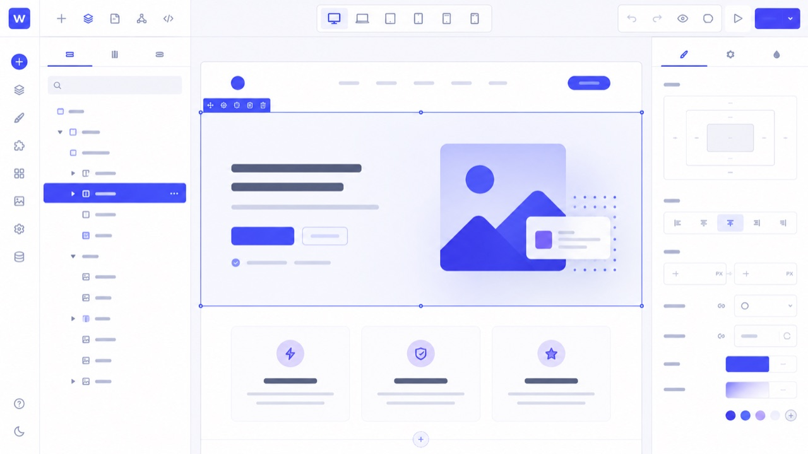

Webflow CMS Explained: How It Actually Works
Not the platform-vs-platform argument — that one lives on WordPress vs Webflow vs Framer. This is what the CMS itself actually is, in the order you would meet each piece if you opened it for the first time.

Most explanations of Webflow's CMS assume you already know what a "collection" is, or they skip straight to arguing it beats WordPress. This is neither. It's a plain-terms walkthrough of how the CMS actually works, followed by an honest read on when it's the right tool for the job and when it isn't.
The short answer
Webflow's CMS is a structured content database built into the same tool you design in. You define a Collection — say, Blog Posts — with Fields such as title, image, body and category. Every Item you add fills those fields into a template you design once. Change the template, and every item using it updates. That's the whole idea; everything below is detail.
What Webflow's CMS actually is
It helps to be clear about what it isn't first. It isn't a page builder for one-off pages — that's the regular Webflow Designer canvas, and you'd use it the same way for a Home or About page whether or not the CMS exists. The CMS is specifically for content that repeats in the same shape: blog posts, case studies, team members, locations, job listings. Anything where you'd otherwise be copy-pasting a page layout and swapping out the text.
Under the hood it behaves like a lightweight database with a visual front end. Structurally, that's not far from what WordPress custom post types and Advanced Custom Fields do — the difference is Webflow's version is built in, with no plugin to install or theme code to write.
Collections, fields and items
Three terms carry the whole system:
- Collection — a content type. Think of it as a table: Blog Posts, Case Studies, Team Members. Each site can have multiple collections, and collections can reference each other (a blog post pointing to its author, say).
- Field — a column inside that collection. Plain text, rich text, image, number, date, a reference to another collection, a fixed set of options — Webflow ships a fixed list of field types, and every item in the collection has the same set of fields.
- Item — a single row. One blog post, one team member, one product. Content editors add, edit and remove items without touching the design.
The piece that makes it click is the Collection Page: a single template you design once and bind to a collection's fields. Add a fortieth blog post item and you get a fortieth live page automatically, using that same template, with no extra design work. That's the entire mechanism — a template plus a list of items, multiplied.
Item caps exist and vary by plan tier. If you're planning a large content operation, check the current limit for the plan you intend to use rather than assuming there isn't one — it's the one number in this article worth confirming directly with Webflow's pricing page before you commit, since it does change over time.
Static pages vs CMS pages
A static page is hand-built and one-off — Home, About, Contact, Pricing. You design it once and it stays that one page.
A CMS page is the Collection Page described above — one template, many live pages, one per item. The test for which you need is simple: if the content repeats in a consistent structure and the list will grow over time, it's a CMS collection. If it's a single, permanent page with its own bespoke layout, it's static. Most business sites end up with a handful of static pages and one or two CMS collections — a blog, and sometimes case studies or locations.
What your team can manage without a developer
Once the collections and templates exist, the ongoing work is genuinely non-technical:
- Adding, editing or removing items — text, images, rich content — through the Editor or the CMS panel.
- Publishing changes live immediately, with no deploy step or developer in the loop.
- Reordering items where a sort field is set up for it.
What still needs a developer is anything structural: adding a new field, creating a new collection, redesigning the template, or wiring up interactions that depend on a field that doesn't exist yet. That split — structure is a build task, content is an editing task — is exactly what makes the CMS useful for a marketing team, and it's true of pretty much any CMS, Webflow included.
Webflow CMS vs WordPress
Neither is straightforwardly better; they trade off differently. WordPress can build the same kind of structured content with custom post types and a plugin like Advanced Custom Fields, and there's effectively no ceiling on how much content or how many field types you can add — but you're assembling that yourself, or paying someone to, and you own the resulting maintenance: plugin updates, hosting, security.
Webflow's CMS comes built in, with no plugins to maintain and hosting handled for you, and it's tightly integrated with the same visual tool you designed the site in. Against that: item caps by plan, and the platform dependency that comes with any hosted tool — you don't own it, and leaving means rebuilding.
Which one fits depends on content volume, who's editing it, and whether the site needs deep third-party integrations. That's the same set of questions the broader platform comparison walks through in more detail.
When it's the right call — and when it isn't
Webflow CMS tends to be the right call when:
- You're running a marketing site with a blog, case studies or team bios — content in the low hundreds of items, not thousands.
- Design precision matters and you want your marketing team publishing without a developer in the loop.
- You'd rather not maintain plugins, and the CMS's built-in field types cover what you need.
It tends to be the wrong call when:
- You're running a large, fast-growing content operation that will outgrow item caps.
- The site needs deep integrations — a CRM, booking system or inventory tool — that WordPress's plugin ecosystem already handles and Webflow doesn't.
- You're selling products with real complexity: variations, tax rules, subscriptions.
- Full data ownership and portability matters more than publishing convenience.
If your project looks like the first list, that's exactly the kind of build covered on the Webflow development page — collection structure, templates and a training handover included.
FAQ
Is Webflow CMS good for a blog?
Yes, for most business blogs. You design the post template once, and every new post becomes an item filled into it — no separate theme or plugin needed. It gets less comfortable if you are publishing at very high volume or need editorial workflow features like roles and approval stages, which is where WordPress is still the stronger fit.
Can I edit Webflow CMS content without a developer?
Yes, once the collections and templates are built. Adding, editing or removing items — text, images, rich content — is a content-editor job with no code involved. Changing the structure itself, like adding a new field or redesigning the template, is a developer task, the same as it would be on any platform.
How many items can a Webflow CMS collection hold?
It depends on your site plan — Webflow sets a per-collection item cap that scales with the plan tier, and those numbers do change over time. If you are planning a large content operation, check the current limit for the plan you intend to use before committing to it, rather than assuming it is unlimited.
The honest conclusion
The CMS is a genuinely well-designed piece of engineering — a structured content system that shares Webflow's core strength (design precision, no-code publishing) and its core constraint (item caps, and you don't own the platform). It's not automatically better or worse than WordPress's equivalent; it's a different trade-off, and the right one depends on how much content you have, who's editing it, and what else the site needs to talk to.
If you're still deciding between the platforms rather than just the CMS, that's the full argument on WordPress vs Webflow vs Framer.